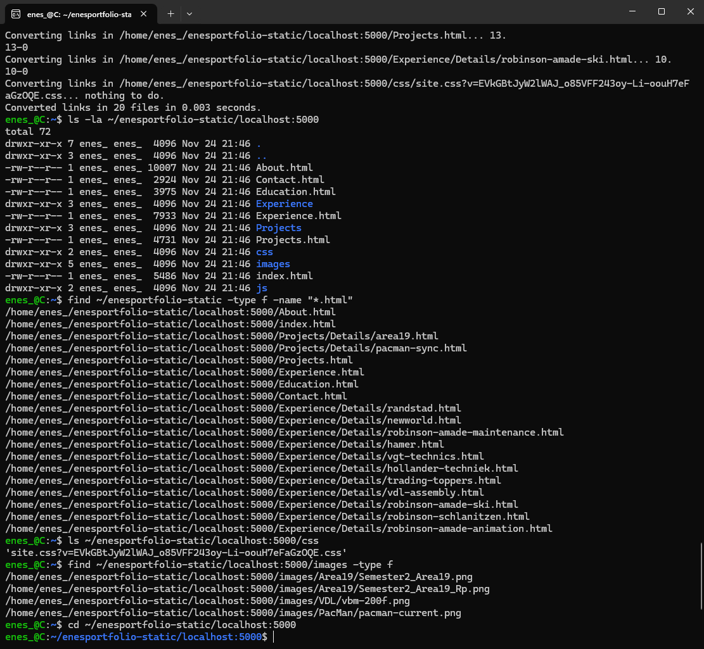

Personal Portfolio Website
A personal portfolio website developed using ASP.NET Core 10, C#, and Razor Pages to showcase my professional experience, technical background, education, and software development projects. The application follows a structured architecture using models, services, and Razor Pages. Portfolio content, including work experience and projects, is stored in JSON files and loaded through a dedicated service layer, separating content management from the presentation layer. I designed and implemented the user interface using HTML, CSS, and JavaScript, with responsive layouts, navigation functionality, project showcases, and detailed work experience pages. To make the website publicly accessible without requiring a continuously running application server, I generated a static version of the ASP.NET Core application and deployed it through GitHub Pages.
Technologies
Highlights
- Full-Stack Web Development – Developed the portfolio using ASP.NET Core 10, C#, Razor Pages, HTML, CSS, and JavaScript.
- Application Architecture – Organised the project using models, services, and Razor Pages to separate application logic, content management, and presentation.
- JSON-Based Content Management – Implemented a dedicated PortfolioService to load project and work experience information from structured JSON files.
- Responsive User Interface – Designed a dark-themed interface with responsive layouts, project cards, work experience sections, and navigation functionality.
- Dynamic Content Rendering – Used Razor Pages to generate project overviews, work experience pages, and detailed information based on JSON data.
- Version Control – Managed source code and development changes using Git and GitHub.
- Static Website Generation – Exported the rendered ASP.NET Core pages into static HTML, CSS, JavaScript, and image files for public hosting.
- GitHub Pages Deployment – Published the static website through GitHub Pages with HTTPS and public access.
- Ongoing Development – Continue to improve the website by updating content, refining the user interface, and adding new projects.
Screenshots
